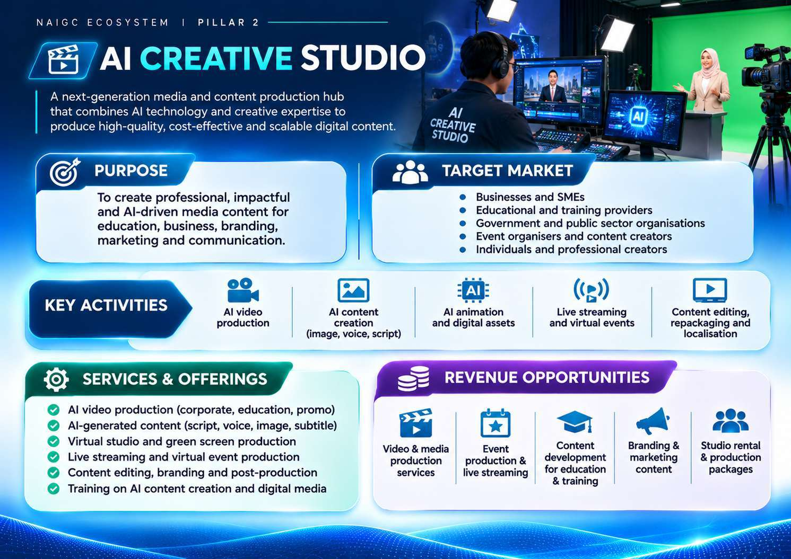

NAIGC
Malaysia AI Generation Centre
SYS//NODE.02 // ONLINE
←
HUB UTAMA
SYS//NODE.02 • STRATEGIC PILLAR 02
AI CREATIVE STUDIO
A next-generation media and content production hub that combines AI technology and creative expertise to produce high-quality, cost-effective and scalable digital content.
PURPOSE & OBJECTIVES
To create professional, impactful and AI-driven media content for education, business, branding, marketing, cultural archiving and global communication.
TARGET MARKET
- Businesses, brands and SMEs requiring cost-effective media
- Educational institutions and digital course creators
- Government agencies and public communications units
- Event organisers, broadcasters and virtual media productions
- Independent digital creators, artists and marketing agencies
KEY ACTIVITIES & OPERATIONS
AI Video Production
High-speed generative video rendering, AI synthetic avatars, and cinematic corporate showcases.
Generative Media Assets
Voice synthesis, script generation, photorealistic image creation, and multi-lingual dubbing.
Virtual Production Studio
Green screen, real-time virtual backdrops, and interactive 3D digital sets.
Live Streaming & Virtual Events
Broadcast-grade AI live streams, virtual conferences, and interactive webinars.
Repackaging & Localisation
Translating and cultural adaptation of digital media for regional and global distribution.
SERVICES & OFFERINGS
- End-to-End AI Video Production (Corporate, Promotional, Educational)
- AI-Generated Multimodal Content (Audio Dubbing, Visuals, Subtitles)
- Virtual Studio, Green Screen & Real-time Backdrop Rental
- Hybrid & Virtual Event Production with AI Broadcast Tech
- Brand Identity Post-Production & Digital Asset Refinement
- Specialised Training on Generative AI Creative Toolchains
REVENUE & VALUE OPPORTUNITIES
Video & Media Production
Live Streaming & Event Services
Branding & Commercial Content
Studio Rental & Tech Packages
OFFICIAL NAIGC STRATEGIC ROADMAP • PILLAR 02
NATIONAL ARCHIVE • AUTHORISED DOCUMENT

SYS//CORE ONLINE • 8 ECOSYSTEM NODES OPERATIONAL • MALAYSIA AI GENERATION CENTRE